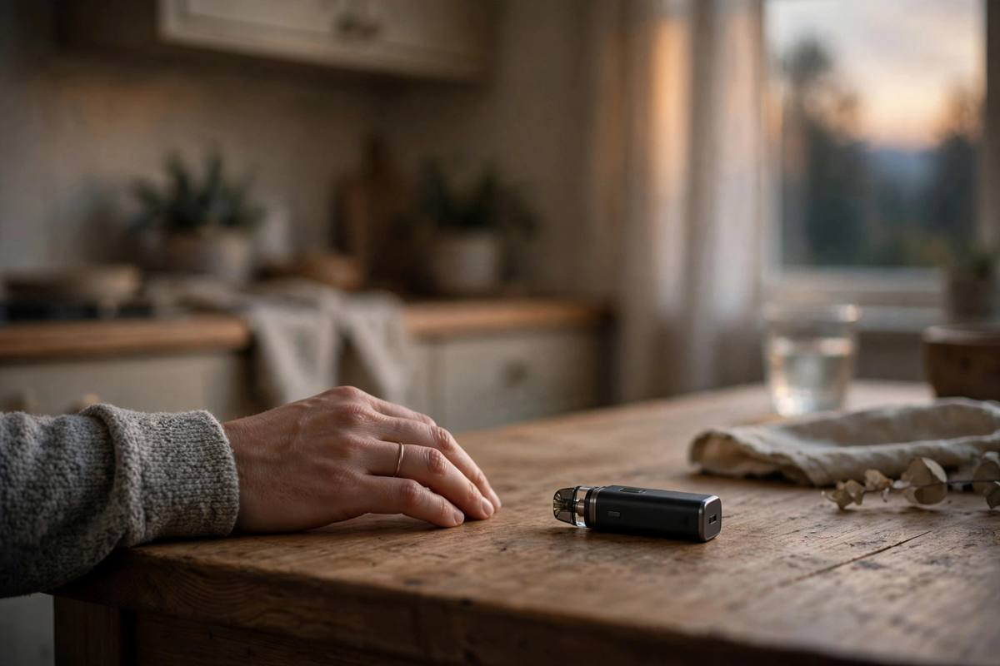

Found a vape: what to do in the first 48 hours

You found it in a backpack, a coat pocket, or a drawer, and your first instinct is a confrontation tonight. Resist the ambush version. The official guidance from British Columbia and Health Canada points the other way: one calm, non judgemental conversation, repeated over time, does more than a single furious lecture. Here is the first two days, in order.
What the official guidance actually says
Three facts anchor everything else. First, vaping is not recommended for youth: the British Columbia guidance says vaping products can expose a teen to chemicals and nicotine, and nicotine is not recommended for young people. Second, dependence is real and can arrive quietly. The Health Canada parent tip sheet states that vaping can lead to physical dependence and that youth can become dependent on nicotine. Third, supply is restricted by law. The same tip sheet notes that the Tobacco and Vaping Products Act prohibits tobacco and vaping products from being sold or given to anyone under the age of 18.
One more fact matters for the conversation itself. British Columbia notes that many youths say they vape to help with mood, stress, and anxiety, and that nicotine in vapour products can aggravate symptoms of depression and anxiety. A teen vaping to cope needs a different response than a teen vaping to fit in at a bus stop, and you cannot tell which one you have until you ask.
The first 48 hours, step by step
- Day one, before any talk: write down what you actually know. What you found, where, and whether you know it contains nicotine. The Canadian Lung Association advises getting comfortable with the key facts before the conversation and picking a calm, distraction free moment. Facts first keeps the talk about the device, not about your worst guess.
- Have one conversation, and open with a question. British Columbia suggests asking, in a non judgemental way, why your teen chooses to vape, and thanking them for being honest if they tell you they vape regularly. Ask open ended questions, listen longer than feels natural, and share the risks once, plainly, without scare tactics.
- Agree the house rule together, out loud. No vaping products in the house or car, no buying for friends, and a clear statement of what happens if a device appears again. A rule your teen heard being made survives better than a rule announced at them.
- Ask what the vaping is doing for them. Stress, boredom, social pressure, and sleep all point to different supports. British Columbia notes a care provider or another trusted adult, such as a teacher, coach, or counsellor, can help reinforce the message.
- Day two: put the support in place. If your teen wants to stop, Health Canada lists free help at gosmokefree.gc.ca/quit and by phone at 1-866-366-3667. Save the number in both phones while you are talking about it, not later.
What success looks like: after two days you know whether nicotine is involved, your teen has heard the risks once from a calm parent, a house rule exists that both of you can repeat, and a support contact is saved. Quitting itself may take longer. The first 48 hours are about information and trust, not a finished result.
The school piece most parents miss
Ask, gently, where the vaping happens. If the answer involves school washrooms or a friend group that shares devices, that is useful information, not a new offence to punish. British Columbia is explicit that parents should not expect just one conversation: the subject will need talking about many times, in many places, and the conversations change as a teen grows. Treat the school piece the same way. One note to a guidance counsellor, framed as support rather than reporting, usually lands better than silence, and it gives your teen a second adult who knows.
When to get a doctor or counsellor involved
Bring in a professional promptly if any of these show up: daily use your teen says they cannot cut down, vaping tied to anxiety or low mood, a persistent cough or breathing symptoms, or use spreading to other substances. British Columbia directs families to mental health and substance use supports when mood is part of the picture, and a family doctor can talk through options without judgement. This article is general information, not medical advice, and it is not a substitute for your teen's own clinician.
Close the first week with a short check, not a verdict. Ask what has been hardest, whether the house rule is holding, and whether the saved support number has been used. Then ask again the week after. The guidance is consistent on this point: steady, repeated, calm contact is the protective factor, and it is built in small conversations, not one big one.
— Grace Okafor, Family & Parenting Writer